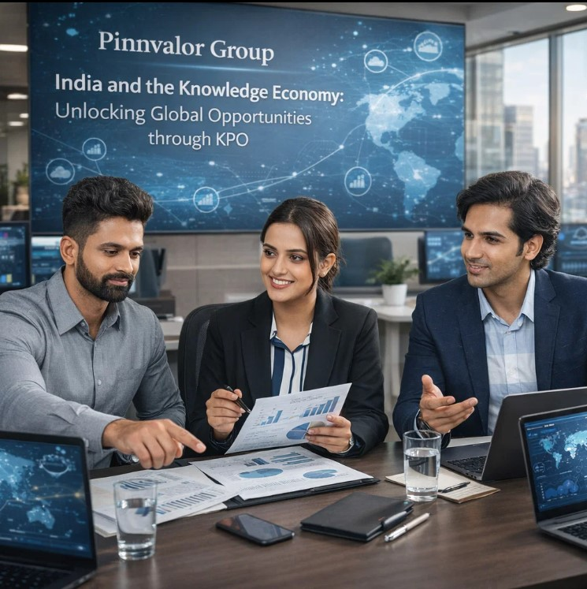

India and the Knowledge Economy: Unlocking Global Opportunities through KPO
The global economy is rapidly transitioning from labor-intensive industries to knowledge-driven value creation. In this evolving landscape, Knowledge Process Outsourcing (KPO) has emerged as a strategic model that allows organizations to outsource high-value, expertise-based tasks to specialized service providers worldwide.
Is India the world’s most powerful hub for knowledge-driven outsourcing services?
The future of outsourcing is not about efficiency alone; it’s about insight, strategy, and innovation. India is leading this transformation through its rapidly evolving Knowledge Process Outsourcing ecosystem.
Unlike traditional outsourcing models that focus on routine processes, KPO involves complex activities such as financial analysis, legal research, market intelligence, engineering design, and advanced data analytics. With its strong talent base, advanced technology ecosystem, and competitive cost structure, India has become one of the world’s leading hubs for knowledge services.
As businesses increasingly seek strategic insights and specialized expertise, India’s KPO sector is playing a crucial role in shaping the global knowledge economy.
Understanding Knowledge Process Outsourcing (KPO)
Knowledge Process Outsourcing (KPO) refers to the delegation of high-value and knowledge-intensive business processes to external service providers who possess specialized domain expertise. These processes require analytical thinking, professional skills, and deep industry knowledge.
Common KPO services include:
- Financial research and equity analysis
- Legal process outsourcing (LPO)
- Market research and competitive intelligence
- Data analytics and business intelligence
- Engineering design and research & development
- Healthcare and pharmaceutical research
While BPO focuses on operational efficiency, KPO focuses on strategic insights, innovation, and high-level decision support for businesses.
The Rise of India in the Global Knowledge Economy
Over the past two decades, India has transformed itself from a cost-effective outsourcing destination into a global knowledge powerhouse. The country has built a strong ecosystem of IT companies, research centers, consulting firms, and specialized service providers.
Several factors have contributed to this rise:
- A large pool of highly educated professionals
- Rapid growth of the IT and digital services industry
- Strong integration with global business markets
- A growing culture of innovation and entrepreneurship
With millions of graduates entering the workforce every year, India offers a vast supply of skilled professionals capable of delivering high-value knowledge services across industries.
Key Drivers Behind India’s KPO Leadership
1. Vast Talent Pool of Knowledge Professionals
India’s most significant advantage in the KPO sector is its large and diverse talent pool. The country produces a significant number of engineers, financial analysts, data scientists, lawyers, and research professionals every year.
This availability of specialized skills allows companies to outsource complex tasks such as:
- Financial modeling and valuation
- Legal research and documentation
- Advanced data analytics
- Scientific and pharmaceutical research
The combination of technical expertise and analytical capability makes India a preferred destination for knowledge-intensive outsourcing.
2. Significant Cost Advantage
Cost efficiency continues to be a major driver of outsourcing decisions. Companies outsourcing knowledge-intensive tasks to India often achieve substantial cost savings compared to performing the same work in developed economies.
However, the advantage is not limited to cost reduction. Organizations also benefit from high-quality expertise delivered by skilled professionals, enabling them to enhance productivity while maintaining strong operational performance.
3. Strong IT and Digital Infrastructure
India’s robust IT and digital infrastructure has played a crucial role in the growth of the KPO sector. Major technology hubs such as Bengaluru, Hyderabad, Pune, and Gurugram provide advanced technology ecosystems that support global outsourcing operations.
The rapid adoption of technologies such as:
- Artificial Intelligence (AI)
- Machine Learning (ML)
- Big Data Analytics
- Cloud Computing
has significantly enhanced the capabilities of Indian KPO firms, allowing them to deliver more sophisticated analytical and research services.

4. Favorable Business Environment
Government initiatives and supportive policies have helped strengthen India’s outsourcing ecosystem. Programs promoting technology parks, Special Economic Zones (SEZs), and foreign investment have created a favorable environment for global companies to establish offshore knowledge centers in India.
These initiatives encourage innovation, infrastructure development, and global collaboration within the knowledge services sector.
Key Industries Driving KPO Growth in India
Financial Services
Financial institutions and investment firms increasingly outsource analytical tasks such as:
- Equity research
- Risk analysis
- Financial modeling
- Investment advisory support
These services help global institutions make informed investment and strategic decisions.
Legal and Compliance Services
Legal Process Outsourcing (LPO) has become a significant segment of the KPO industry. Law firms and corporations outsource various legal tasks to specialized teams in India.
- Contract review and management
- Intellectual property research
- Litigation support
- Regulatory compliance analysis
Healthcare and Pharmaceutical Research
India has become a strong destination for outsourced healthcare research, including:
- Clinical research support
- Drug discovery assistance
- Medical data analysis
- Healthcare analytics
This allows pharmaceutical companies to accelerate innovation while optimizing research costs.
Data Analytics and Business Intelligence
As organizations increasingly rely on data-driven strategies, demand for advanced analytics and business intelligence services has grown significantly.
Indian KPO firms provide solutions such as:
- Predictive analytics
- Market intelligence
- Customer behavior analysis
- Strategic business insights
Challenges Facing the KPO Sector
Talent Retention
One of the major challenges in the KPO industry is retaining highly skilled professionals. High demand for specialized talent often leads to increased employee turnover.
Data Security and Compliance
Organizations outsourcing sensitive information must ensure strict data protection and regulatory compliance. Companies must invest in strong cybersecurity systems and governance frameworks to maintain client trust.
Increasing Global Competition
Countries such as the Philippines, Vietnam, and several Eastern European nations are emerging as alternative outsourcing destinations, increasing global competition for India’s KPO sector.
The Future of KPO in India
Despite these challenges, the future of India’s KPO industry remains highly promising. As businesses continue to prioritize digital transformation and knowledge-driven strategies, the demand for specialized outsourcing services is expected to grow significantly.
Key trends shaping the future include:
- Integration of AI and automation in knowledge services
- Growth of advanced analytics and decision intelligence
- Expansion of Global Capability Centers (GCCs)
- Increasing demand for specialized consulting services
These developments position India to strengthen its role as a global hub for knowledge-driven innovation.
Conclusion
Knowledge Process Outsourcing represents the next stage in the evolution of the global outsourcing industry. By focusing on intellectual capital and specialized expertise, KPO enables organizations to gain strategic insights while improving operational efficiency.
With its strong talent pool, advanced technology infrastructure, and competitive service delivery model, India has established itself as a leader in the global knowledge economy. By continuing to invest in innovation, education, and digital capabilities, India is well positioned to unlock even greater global opportunities in the years ahead.